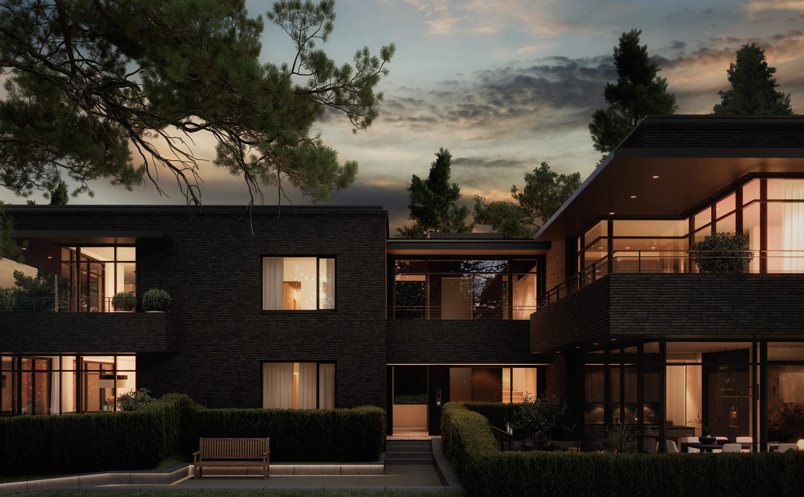

Heyerdahls vei 9
8 romslige leiligheter på Slemdal med svært høy standard og fjordutsikt. Underjordisk garasjeanlegg og heis. Parkmessig uteanlegg. Fasader i håndlaget Petersen Kolumba tegl og store glassflater. Arkitekt Jon Støre. Ferdig 2022.